West Ardougne
Town at 2524, 3308 · Kingdom of Kandarin
Open on the world map → Open in knowledge graph → Below: West Ardougne (underground)
NPCs
| NPC | Level | Spawns | Notable drops |
|---|---|---|---|
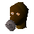 Mourner | 24 | 5 | |
| 24 | 5 | ||
| 24 | 2 | Herb drop table, Fishing bait, Coins, Iron mace | |
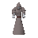 Ghost | 19 | 2 | |
| 18 | 5 | ||
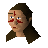 Woman | 14 | 2 | |
| 13 | 1 | ||
| 13 | 2 | Fishing bait, Herb drop table, Coins, Iron arrow | |
| 12 | 2 | ||
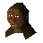 Woman | 12 | 3 | |
| 11 | 3 | ||
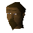 Man | 4 | 1 | |
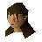 Woman | 4 | 3 | |
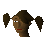 Woman | 4 | 3 | |
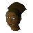 Woman | 3 | 2 | |
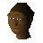 Woman | 3 | 1 | |
| 3 | 2 | ||
| 1 | 4 | ||
| 1 | |||
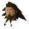 Bravek | 1 | ||
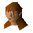 Carla | 1 | ||
| 1 | |||
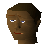 Child | 1 | ||
| 1 | |||
| 1 | |||
| 1 | |||
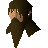 Man | 3 | ||
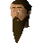 Man | 1 | ||
| 2 | |||
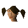 Milli Rehnison | 1 | ||
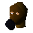 Mourner | 3 | ||
| 2 | |||
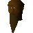 Priest | 1 | ||
| 1 |